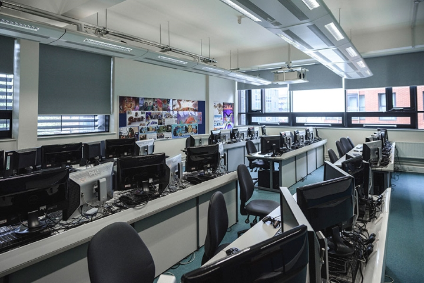

Our Facilities
The College is located in the attractive and pleasantly refurbished Building. The building houses computing laboratories, and lecture/tutorial rooms. It has its own catering facilities and student work areas. There is also a car park to the back of the building.
Our building has space of 9500m², houses over 240 staff and provides teaching space for more than 1600 students.
Facilities include:• wi-fi technology
• pool teaching rooms, including classrooms to teach from 25 - 80 students
• specialist faculty facilities
• a double height lecture theatre at first and second floor level
• dramatic three-storey glass open atrium
• meeting rooms
• office accommodation
• specialist IT facilities
• reception desk area
• catering outlet
• parking for disabled badge holders
• cycle racks
• gallery
